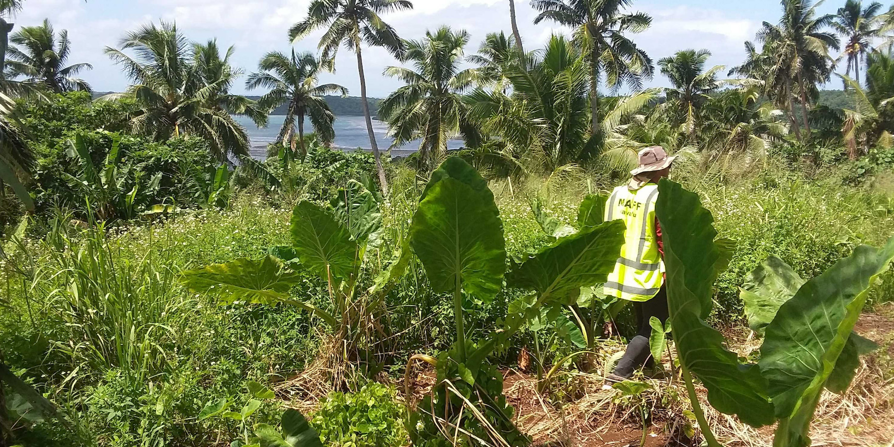
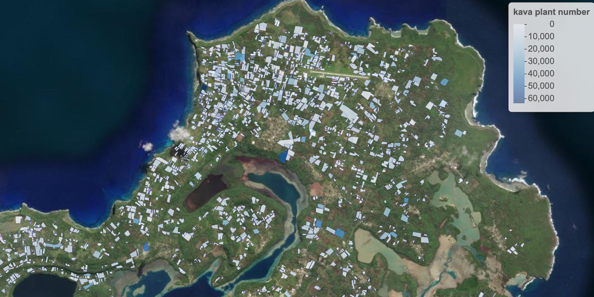
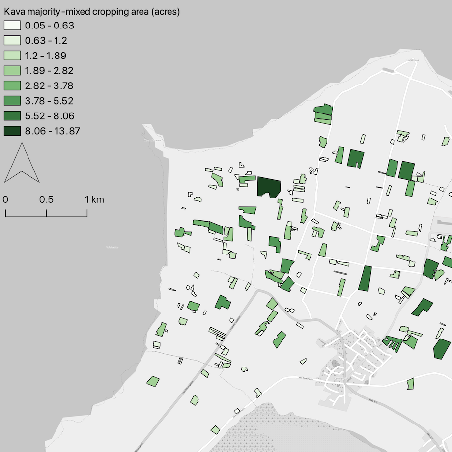
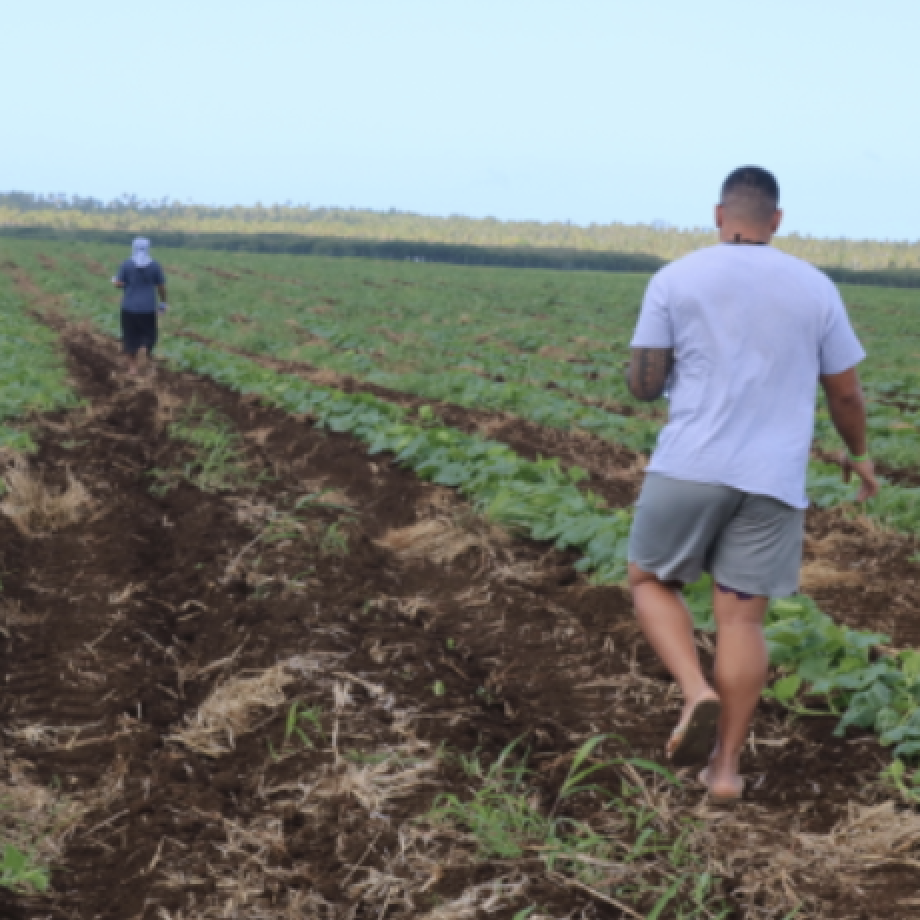
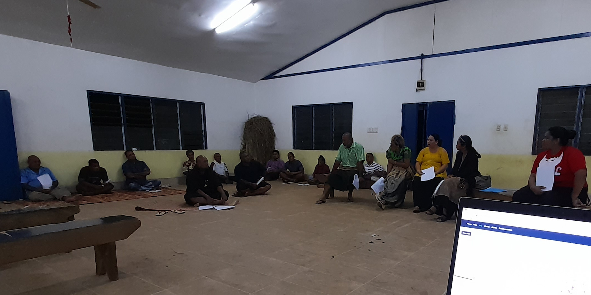

Tonga Crop Survey
Tonga Crop Survey
Each year, the Ministry of Agriculture, Food, and Forests in Tonga conduct a crop survey to record the area allocated to different crops and the number of crops planted. The Ministry use this information for their reporting, informing policies and programs, and allocating government resources. This information is also used in food security responses after disaster events.
Traditionally, this data was captured using paper surveys by teams of extension officers, was aggregated at the block level, and was manually typed up into spread sheets. This was a costly process in terms of time and there was no data sharing and management system in-plae. Further, this data did not provide a spatially detailed view of the diverse cropping and farming systems that span Tonga’s rural landscapes.
Since June 2019, Ministry staff have been working with teams from Australian and Pacific universities to develop a digital farm mapping workflow and to build the capacity of extension officers to map farms using mobile geospatial data collection apps, implement large team collaborative data collection projects, and analyse data using web maps and dashboards.

This work entailed a mix of agile and participatory software development, using the ICT4D method, and several online, classroom, and in-the-field training sessions. This led to the development of the maplandscape workflow, which uses QField for data collection, QFieldCloud for team and project management, and web map and dashboard applications for data visualisation and analysis.
In the latter half of 2020, a team of 10 data collectors on the island group of Vava’u mapped over 2,700 fields. This data permitted analysts in the Ministry to create different views of the island group’s mixed cropping systems.

This information was used to track change in land use through time; it was possible to map how kava dominant cropping systems were replacing diverse root crop and fruit tree systems. This information was also valuable for marketing of commercial crops; Ministry staff could quickly query the number of commercial crops planted, such as watermelon, and see where they were being grown.


Following the Vava’u crop survey, surveys were undertaken on ’Eua, Ha’apai, and Tongatapu. On Tongatapu a team of over 40 data collectors mapped the island group’s cropping, livestock, fallow, and agro-forestry systems. This generated a database of over 12,000 spatial features with rich attribute information describing their agricultural management and use. This data was used in initial assessments of the damage to croplands and food supply following the Hunga Tonga Hunga Ha’apai volcanic eruption and tsunami in 2022.
